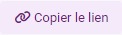
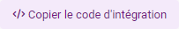

Sécurité & partage
Partagez votre rapport en toute sécurité avec d'autres utilisateurs. Ces derniers ont alors accès aux vues du rapport qui sont alimentées par des données mises à jour en temps réel à mesure que vous collectez des réponses.

-
Cliquez sur le bouton

pour copier le lien vers le rapport.En cliquant sur le lien vers le rapport, une nouvelle page va s’ouvrir sur votre navigateur. Celle-ci contient la vue que vous avez réalisée avec toutes ses pages. Vous pouvez donc copier le lien généré pour le diffuser par mail ou utiliser les boutons correspondants pour une diffusion sur les réseaux sociaux (Facebook, Twitter, LinkedIn).
-
Cliquez sur le bouton

pour générer un code i-frame si vous souhaitez intégrer la vue dans votre site-web.L'intégration d'un rapport dans une iframe ou une popin est uniquement autorisée si le domaine hôte est explicitement déclaré dans une whitelist. Sans configuration spécifique, toute tentative d’intégration externe est bloquée.
Pour définir les domaines autorisés :
-
Accédez à la partie Sécurité et partage du rapport concerné.
-
Cliquez sur l’icône roue crantée située à droite de “Lien vers le rapport”.
Une modale de configuration s’affiche.
-
Saisissez les domaines autorisés à intégrer le rapport via iframe ou popin puis cliquez sur Ajouter.
Format : domain.com, sub.domain.com, *.domain.com
EXEMPLE :
- "lesphinx-developpement.fr" autorise uniquement ce domaine.
- "sousdomaine.lesphinx-developpement.fr" autorise uniquement ce sous-domaine
- "*.lesphinx-developpement.fr" autorise l’ensemble des sous-domaines. -
Cliquez sur Valider.
-

3 types de partages vous sont proposés. Selon le type de partage choisi, les données et les vues sont filtrées selon les profils d'utilisateurs.

-
Accès libre :
Tous les utilisateurs disposant du lien peuvent accéder au rapport.
-
Accès protégé par un mot de passe unique :
Tous les utilisateurs disposant d'un mot de passe du rapport peuvent y accéder.
Un mot de passe est défini par défaut.
Pour Voir / modifier le mot de passe du rapport, vous devez confirmer votre identité en entrant d'abord le mot de passe de votre compte.
-
Accès contrôlé :
Uniquement les utilisateurs que vous autorisez, identification par login/mot de passe. Accès aux données et aux vues filtrées selon le profil d'utilisateur.

-
Cliquez sur le bouton Ajouter des utilisateurs pour donner l'accès à des utilisateurs.
-
Saisissez pour chaque destinataire, son adresse e-mail (obligatoire), ainsi que tous les éléments permettant de définir son profil de lecture.
Vous pouvez ajouter manuellement des utilisateurs ou importer directement une liste (au format csv) en cliquant sur le bouton Importer un fichier CSV.
L'utilisateur sera invité à créer un mot de passe à la première connexion (lien est valable 60 jours seulement). Ce mot de passe sera valide pour tous les rapports auxquels l'utilisateur est autorisé à consulter sur cette plateforme.

Il est également possible de modifier le profil des utilisateurs après les avoir ajoutés. Pour ce faire :
-
Cliquez sur depuis la liste des utilisateurs.
EXEMPLE :
Si vous souhaitez restreindre les résultats selon la situation géographique du lecteur, ajouter en intitulé de colonne le nom de la variable de l’étude correspondant à la situation géographique (par exemple, Ville) et pour chaque individu la valeur correspondante (ex : Paris).